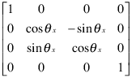
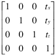
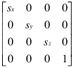
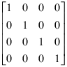

Transforms Supported by hgtransform
Transforming Objects
The transform object's Matrix property applies
a transform to all the object’s children in unison. Transforms
include rotation, translation, and scaling. Define a transform with
a four-by-four transformation matrix.
Creating a Transform Matrix
The makehgtform function
simplifies the construction of matrices to perform rotation, translation,
and scaling. For information on creating transform matrices using makehgtform,
see Nest Transforms for Complex Movements.
Rotation
Rotation transforms follow the right-hand rule — rotate objects about the x-, y-, or z-axis, with positive angles rotating counterclockwise, while sighting along the respective axis toward the origin. If the angle of rotation is theta, the following matrix defines a rotation of theta about the x-axis.

To create a transform matrix for rotation about an arbitrary
axis, use the makehgtform function.
Translation
Translation transforms move objects with respect to their current locations. Specify the translation as distances tx, ty, and tz in data space units. The following matrix shows the location of these elements in the transform matrix.

Scaling
Scaling transforms change the sizes of objects. Specify scale factors sx, sy, and sz and construct the following matrix.

You cannot use scale factors less than or equal to zero.
The Default Transform
The default transform is the identity matrix, which you can
create with the eye function.
Here is the identity matrix.

Disallowed Transforms: Perspective
Perspective transforms change the distance at which you view an object. The following matrix is an example of a perspective transform matrix, which MATLAB® graphics does not allow.
In this case, px is the perspective factor.
Disallowed Transforms: Shear
Shear transforms keep all points along a given line (or plane, in 3-D coordinates) fixed while
shifting all other points parallel to the line (plane) proportional to their
perpendicular distance from the fixed line (plane). The following matrix is an example
of a shear transform matrix, which hgtransform does not allow.
In this case, sx is the shear factor and can replace any zero element in an identity matrix.
Absolute vs. Relative Transforms
Transforms are specified in absolute terms, not relative to the current transform. For example, if you apply a transform that translates the transform object 5 units in the x direction, and then you apply another transform that translates it 4 units in the y direction, the resulting position of the object is 4 units in the y direction from its original position.
If you want transforms to accumulate, you must concatenate the individual transforms into a single matrix. See Combining Transforms into One Matrix.
Combining Transforms into One Matrix
It is usually more efficient to combine various transform operations
into one matrix by concatenating (multiplying) the individual matrices
and setting the Matrix property to the result.
Matrix multiplication is not commutative, so the order in which you
multiply the matrices affects the result.
For example, suppose you want to perform an operation that scales,
translates, and then rotates. Assuming R, T and S are
your individual transform matrices, multiply the matrices as follows:
C = R*T*S % operations are performed from right to left
S is the scaling matrix, T is
the translation matrix, R is the rotation matrix,
and C is the composite of the three operations.
Then set the transform object's Matrix property
to C:
hg = hgtransform('Matrix',C);
Multiplying the Transform by the Identity Matrix
The following sets of statements are not equivalent. The first set:
hg.Matrix = C; hg.Matrix = eye(4);
results in the removal of the transform C. The second set:
I = eye(4); C = I*R*T*S; hg.Matrix = C;
applies the transform C. Concatenating the
identity matrix to other matrices has no effect on the composite matrix.
Undoing Transform Operations
Because transform operations are specified in absolute terms (not relative to the current transform), you can undo a series of transforms by setting the current transform to the identity matrix. For example:
hg = hgtransform('Matrix',C); ... hg.Matrix = eye(4);
returns the objects contained by the transform object, hg,
to their orientation before applying the transform C.
For more information on the identity matrix, see the eye function
See Also
hgtransform | makehgtform | eye